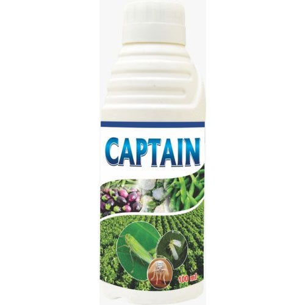
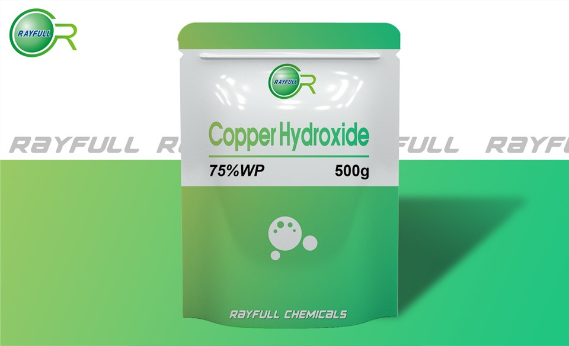
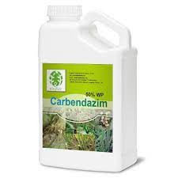
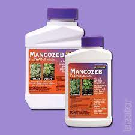

Prevention
Seed treatment with Captan 3g/kg of seed.
Spraying Copper hydroxide 77 WP @ 2g/l of water was found effective for the management of Cercospora leaf spot.
Spraying with 1g Carbendezim or 2g Mancozeb/1lit.

Captan 3g

Copper hydroxide 77 WP

Carbendezim

Mancozeb
Back
s